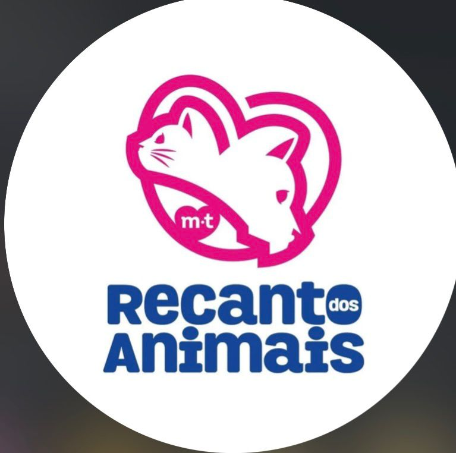

Castração
Procedimento preventivo com avaliação e orientação completa.

Recanto dos AnimaisCada procedimento começa com avaliação, exames pré-operatórios e orientação clara para a recuperação do pet.
Agendar avaliaçãoEquipe atenta, protocolos de anestesia, monitoramento e acompanhamento pós-operatório.
Atendimentos planejados com foco em bem-estar e segurança.
Procedimento preventivo com avaliação e orientação completa.
Cirurgias clínicas conforme diagnóstico e necessidade do animal.
Avaliação individual e encaminhamento adequado para análise.
Cuidados cirúrgicos e preventivos para saúde bucal.
1. Consulta e avaliação para entender o caso e orientar o tutor.
2. Exames pré-operatórios para reduzir riscos e planejar o procedimento.
3. Cirurgia com cuidado, monitoramento e equipe preparada.
4. Recuperação com acompanhamento e instruções para casa.